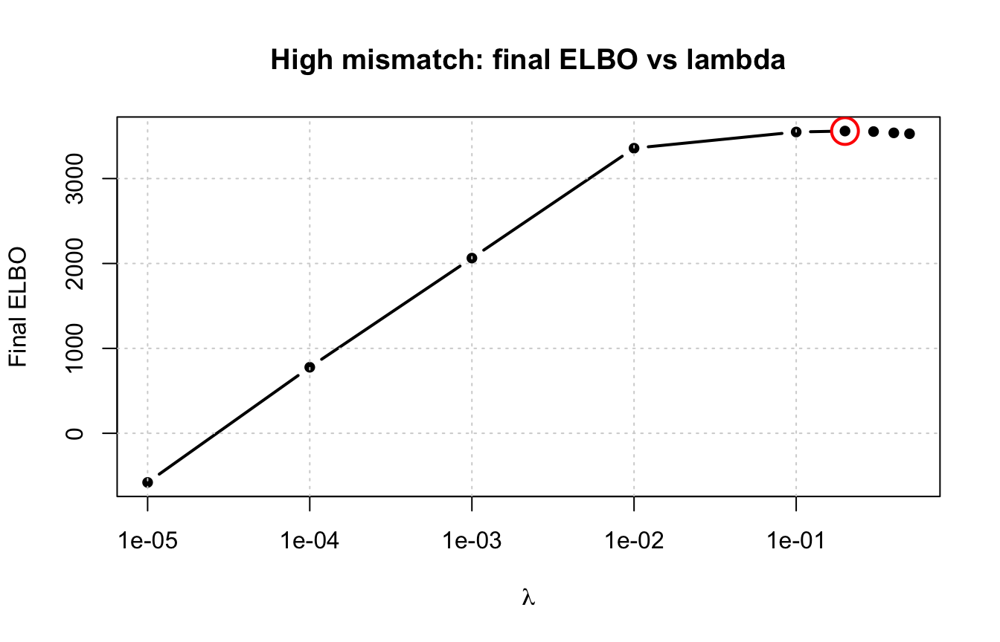
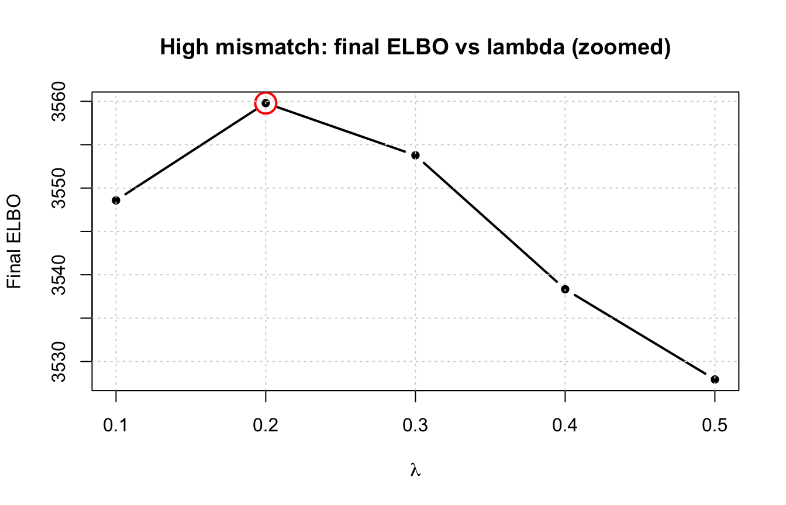
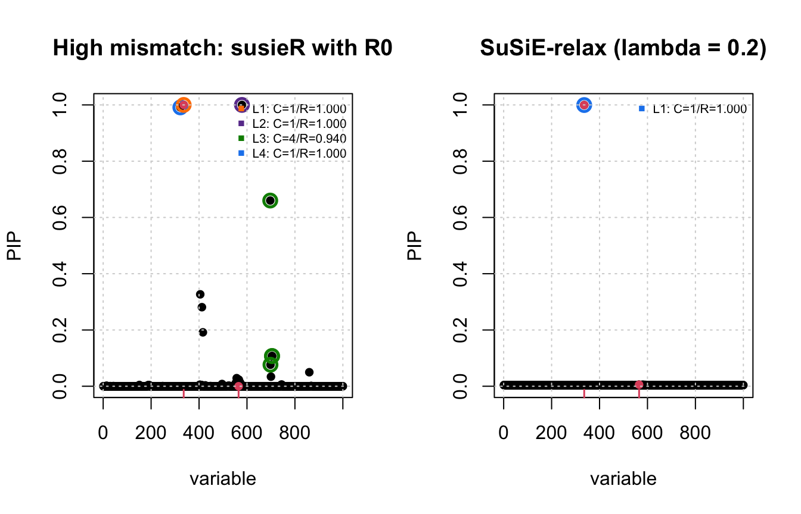

Last updated: 2026-06-22
Checks: 7 0
Knit directory: susie-relax/
This reproducible R Markdown analysis was created with workflowr (version 1.7.2). The Checks tab describes the reproducibility checks that were applied when the results were created. The Past versions tab lists the development history.
Great! Since the R Markdown file has been committed to the Git repository, you know the exact version of the code that produced these results.
Great job! The global environment was empty. Objects defined in the global environment can affect the analysis in your R Markdown file in unknown ways. For reproduciblity it’s best to always run the code in an empty environment.
The command set.seed(20260621) was run prior to running
the code in the R Markdown file. Setting a seed ensures that any results
that rely on randomness, e.g. subsampling or permutations, are
reproducible.
Great job! Recording the operating system, R version, and package versions is critical for reproducibility.
Nice! There were no cached chunks for this analysis, so you can be confident that you successfully produced the results during this run.
Great job! Using relative paths to the files within your workflowr project makes it easier to run your code on other machines.
Great! You are using Git for version control. Tracking code development and connecting the code version to the results is critical for reproducibility.
The results in this page were generated with repository version d0b71ae. See the Past versions tab to see a history of the changes made to the R Markdown and HTML files.
Note that you need to be careful to ensure that all relevant files for
the analysis have been committed to Git prior to generating the results
(you can use wflow_publish or
wflow_git_commit). workflowr only checks the R Markdown
file, but you know if there are other scripts or data files that it
depends on. Below is the status of the Git repository when the results
were generated:
Ignored files:
Ignored: .DS_Store
Ignored: .Rhistory
Ignored: .Rproj.user/
Ignored: analysis/.DS_Store
Note that any generated files, e.g. HTML, png, CSS, etc., are not included in this status report because it is ok for generated content to have uncommitted changes.
These are the previous versions of the repository in which changes were
made to the R Markdown
(analysis/choose-lambda-high-mismatch.Rmd) and HTML
(docs/choose-lambda-high-mismatch.html) files. If you’ve
configured a remote Git repository (see ?wflow_git_remote),
click on the hyperlinks in the table below to view the files as they
were in that past version.
| File | Version | Author | Date | Message |
|---|---|---|---|---|
| Rmd | d0b71ae | dodat-stats | 2026-06-22 | update high-mismatch case |
| html | cff4fc9 | dodat-stats | 2026-06-22 | Build site. |
| Rmd | bec8a52 | dodat-stats | 2026-06-22 | Add lambda-selection analyses (low- and |
knitr::opts_chunk$set(
echo = TRUE,
message = FALSE,
warning = FALSE,
fig.width = 7,
fig.height = 4.5
)
library(susieR)
source("code/SuSiE-relax.R")
source("code/sim_2pop.R")
source("code/plot.R")SuSiE-relax does not use the out-of-sample LD matrix \(R_0\) directly. It uses a stabilized reference \[ \bar R = (1-\lambda) R_0 + \lambda I, \] re-scaled to a correlation matrix. The ridge parameter \(\lambda\) controls how much \(R_0\) is pulled toward the identity before fitting. This note investigates whether the choice of \(\lambda\) affects the fine-mapping result in the high-mismatch case, where the reference panel is small (\(N_0 = 100\)) so that \(R_0\) is a noisy estimate of the in-sample LD. In this regime ordinary susieR fit on \(R_0\) tends to overfit and select all \(L = 5\) effects, while SuSiE-relax learns a small \(\nu_0\) and selects only one effect.
The plan is:
Because the ELBO is a variational lower bound on \(\log p(x \mid \bar R)\) and \(x\) is held fixed, comparing the final ELBO across the \(\lambda\) grid is a reasonable model-selection criterion for \(\lambda\).
standardize_sim <- function(res) {
d <- 1 / sqrt(diag(res$R))
res$v <- d * res$v
res$R <- cov2cor(res$R)
res$R0 <- cov2cor(res$R0)
res
}
make_rbar <- function(R0, lambda = 0.01) {
Rbar <- (1 - lambda) * R0 + lambda * diag(1, ncol(R0))
cov2cor(Rbar)
}
make_cs_from_alpha <- function(alpha, R, coverage = 0.95,
min_abs_corr = 0.5,
min_top_alpha = 1e-4) {
alpha <- as.matrix(alpha)
cs <- list()
purity <- numeric()
for (ell in seq_len(nrow(alpha))) {
a <- as.numeric(alpha[ell, ])
if (max(a) < min_top_alpha) {
next
}
ord <- order(a, decreasing = TRUE)
k <- which(cumsum(a[ord]) >= coverage)[1]
vars <- ord[seq_len(k)]
p <- if (length(vars) == 1) {
1
} else {
R_sub <- abs(R[vars, vars, drop = FALSE])
min(R_sub[upper.tri(R_sub)])
}
if (is.finite(p) && p >= min_abs_corr) {
nm <- paste0("L", ell)
cs[[nm]] <- vars
purity[nm] <- p
}
}
list(cs = cs, purity = purity)
}
count_selected_cs <- function(alpha, R, coverage = 0.95,
min_abs_corr = 0.5,
min_top_alpha = 1e-4) {
length(make_cs_from_alpha(
alpha = alpha,
R = R,
coverage = coverage,
min_abs_corr = min_abs_corr,
min_top_alpha = min_top_alpha
)$cs)
}
summarize_fit <- function(label, alpha, pip, R_for_cs, beta_true,
nu0 = NA_real_) {
alpha <- as.matrix(alpha)
top <- apply(alpha, 1, which.max)
top_alpha <- apply(alpha, 1, max)
cs_info <- make_cs_from_alpha(alpha, R = R_for_cs)
data.frame(
method = label,
selected_L = length(cs_info$cs),
nu0 = nu0,
gamma_hat = paste(top, collapse = ", "),
top_alpha = paste(sprintf("%.3f", top_alpha), collapse = ", "),
causal_pip = paste(sprintf("%.3f", pip[beta_true != 0]), collapse = ", ")
)
}
plot_pip <- function(fit, R_for_cs, beta_true, main) {
susie_plot_alpha(
fit,
R = R_for_cs,
b = beta_true,
main = main,
coverage = 0.95,
min_abs_corr = 0.5
)
grid()
}We use the same simulation settings as the high-mismatch case in the SuSiE-relax demonstration: a small reference panel (\(N_0 = 100\)) so that the out-of-sample LD is a noisy estimate of the GWAS LD. The data set is simulated once and shared across all \(\lambda\) values.
N <- 20000L
J <- 1000L
L <- 5L
res <- sim_2pop(
chrom = "chr22",
start = 20e6,
end = 21e6,
T_split = 20,
n_gwas = N,
n_ref = 100L,
J = J,
h2 = 0.01,
seed = 9
)
res <- standardize_sim(res)
v <- res$v
R <- res$R
R0 <- res$R0
beta_true <- res$beta_true
causal <- which(beta_true != 0)
causal[1] 336 565For reference, we also fit ordinary susieR directly on the out-of-sample LD \(R_0\). This fit does not depend on \(\lambda\).
fit_susie_out <- susie_suff_stat(
XtX = N * R0,
Xty = N * v,
n = N,
yty = N,
L = L
)lambda_grid <- c(1e-5, 1e-4, 1e-3, 1e-2, 0.1, 0.2, 0.3, 0.4, 0.5)
relax_fits <- lapply(lambda_grid, function(lambda) {
Rbar <- make_rbar(R0, lambda = lambda)
fit_susie_relax(
x = v,
Rbar = Rbar,
N = N,
L = L,
sigma2 = rep(0.3^2, L),
nu0_init = 2000,
estimate_nu0 = TRUE,
warmup_iter = 5,
max_iter = 3000,
tol = 1e-7,
verbose = FALSE,
nu0_bounds = c(10, 10000),
nu0_update_interval = 1,
nu0_tol = 1e-4
)
})
names(relax_fits) <- sprintf("lambda=%g", lambda_grid)
lambda_summary <- do.call(rbind, lapply(seq_along(lambda_grid), function(i) {
fit <- relax_fits[[i]]
data.frame(
lambda = lambda_grid[i],
final_elbo = fit$elbo[length(fit$elbo)],
n_iter = length(fit$elbo),
nu0 = fit$nu0,
tau2 = fit$tau2,
selected_L = count_selected_cs(fit$alpha, R = make_rbar(R0, lambda_grid[i])),
causal_pip = paste(sprintf("%.3f", fit$pip[beta_true != 0]), collapse = ", ")
)
}))
lambda_summary lambda final_elbo n_iter nu0 tau2 selected_L causal_pip
1 1e-05 -578.7944 3000 10.00000 0.076923077 1 0.003, 0.003
2 1e-04 777.6574 3000 10.00000 0.076923077 1 0.003, 0.003
3 1e-03 2063.1240 1400 10.00000 0.076923077 1 0.003, 0.004
4 1e-02 3357.6279 1480 10.00000 0.076923077 1 1.000, 0.004
5 1e-01 3548.5816 736 24.56976 0.036271630 1 0.993, 0.005
6 2e-01 3559.7987 738 60.18752 0.015825910 1 1.000, 0.006
7 3e-01 3553.7752 952 106.67634 0.009117737 1 1.000, 0.014
8 4e-01 3538.3390 976 173.74898 0.005657741 1 1.000, 0.101
9 5e-01 3527.9293 544 892.10511 0.001117187 4 1.000, 0.998best_idx <- which.max(lambda_summary$final_elbo)
best_lambda <- lambda_summary$lambda[best_idx]
plot(
lambda_summary$lambda, lambda_summary$final_elbo,
type = "b", lwd = 2, pch = 16, log = "x",
xlab = expression(lambda), ylab = "Final ELBO",
main = "High mismatch: final ELBO vs lambda"
)
points(
best_lambda, lambda_summary$final_elbo[best_idx],
col = "red", pch = 1, cex = 2.5, lwd = 2
)
grid()
| Version | Author | Date |
|---|---|---|
| cff4fc9 | dodat-stats | 2026-06-22 |
best_lambda[1] 0.2The red circle marks the \(\lambda\) with the largest final ELBO.
Because maximizing the ELBO often favors large \(\lambda\) here, we zoom in on the large-\(\lambda\) region \(\{0.1, 0.2, 0.3, 0.4, 0.5\}\).
zoom_lambdas <- c(0.1, 0.2, 0.3, 0.4, 0.5)
zoom_summary <- lambda_summary[lambda_summary$lambda %in% zoom_lambdas, ]
zoom_best_idx <- which.max(zoom_summary$final_elbo)
plot(
zoom_summary$lambda, zoom_summary$final_elbo,
type = "b", lwd = 2, pch = 16,
xlab = expression(lambda), ylab = "Final ELBO",
main = "High mismatch: final ELBO vs lambda (zoomed)"
)
points(
zoom_summary$lambda[zoom_best_idx], zoom_summary$final_elbo[zoom_best_idx],
col = "red", pch = 1, cex = 2.5, lwd = 2
)
grid()
best_fit <- relax_fits[[best_idx]]
best_Rbar <- make_rbar(R0, lambda = best_lambda)
summary <- rbind(
summarize_fit(
label = "susieR with R0",
alpha = fit_susie_out$alpha,
pip = fit_susie_out$pip,
R_for_cs = R0,
beta_true = beta_true
),
summarize_fit(
label = sprintf("SuSiE-relax (best lambda = %g)", best_lambda),
alpha = best_fit$alpha,
pip = best_fit$pip,
R_for_cs = best_Rbar,
beta_true = beta_true,
nu0 = best_fit$nu0
)
)
summary method selected_L nu0 gamma_hat
1 susieR with R0 4 NA 336, 579, 697, 322, 405
2 SuSiE-relax (best lambda = 0.2) 1 60.18752 336, 565, 565, 565, 565
top_alpha causal_pip
1 1.000, 1.000, 0.660, 0.991, 0.327 1.000, 0.000
2 1.000, 0.001, 0.001, 0.001, 0.001 1.000, 0.006old_par <- par(no.readonly = TRUE)
par(mfrow = c(1, 2))
plot_pip(
fit_susie_out,
R0,
beta_true,
main = "High mismatch: susieR with R0"
)
plot_pip(
best_fit,
best_Rbar,
beta_true,
main = sprintf("SuSiE-relax (lambda = %g)", best_lambda)
)
| Version | Author | Date |
|---|---|---|
| cff4fc9 | dodat-stats | 2026-06-22 |
par(old_par)
sessionInfo()R version 4.5.2 (2025-10-31)
Platform: aarch64-apple-darwin20
Running under: macOS Tahoe 26.5.1
Matrix products: default
BLAS: /System/Library/Frameworks/Accelerate.framework/Versions/A/Frameworks/vecLib.framework/Versions/A/libBLAS.dylib
LAPACK: /Library/Frameworks/R.framework/Versions/4.5-arm64/Resources/lib/libRlapack.dylib; LAPACK version 3.12.1
locale:
[1] en_US.UTF-8/en_US.UTF-8/en_US.UTF-8/C/en_US.UTF-8/en_US.UTF-8
time zone: America/New_York
tzcode source: internal
attached base packages:
[1] stats graphics grDevices utils datasets methods base
other attached packages:
[1] susieR_0.14.2 workflowr_1.7.2
loaded via a namespace (and not attached):
[1] sass_0.4.10 generics_0.1.4 stringi_1.8.7 lattice_0.22-7
[5] digest_0.6.39 magrittr_2.0.4 evaluate_1.0.5 grid_4.5.2
[9] RColorBrewer_1.1-3 fastmap_1.2.0 plyr_1.8.9 rprojroot_2.1.1
[13] jsonlite_2.0.0 Matrix_1.7-4 processx_3.8.6 whisker_0.4.1
[17] reshape_0.8.10 mixsqp_0.3-54 ps_1.9.1 promises_1.5.0
[21] httr_1.4.8 scales_1.4.0 jquerylib_0.1.4 cli_3.6.6
[25] rlang_1.2.0 crayon_1.5.3 withr_3.0.2 cachem_1.1.0
[29] yaml_2.3.12 otel_0.2.0 tools_4.5.2 dplyr_1.2.0
[33] ggplot2_4.0.2 httpuv_1.6.17 reticulate_1.46.0 png_0.1-9
[37] vctrs_0.7.1 R6_2.6.1 matrixStats_1.5.0 lifecycle_1.0.5
[41] git2r_0.36.2 stringr_1.6.0 fs_2.1.0 irlba_2.3.7
[45] pkgconfig_2.0.3 callr_3.7.6 pillar_1.11.1 bslib_0.10.0
[49] later_1.4.8 gtable_0.3.6 glue_1.8.0 Rcpp_1.1.1
[53] xfun_0.56 tibble_3.3.1 tidyselect_1.2.1 rstudioapi_0.18.0
[57] knitr_1.51 farver_2.1.2 htmltools_0.5.9 rmarkdown_2.30
[61] compiler_4.5.2 getPass_0.2-4 S7_0.2.1